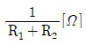
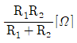
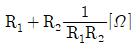
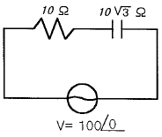
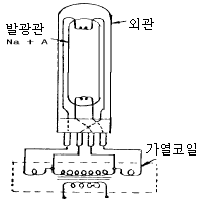
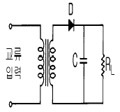
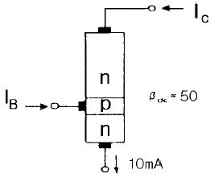
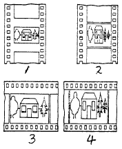
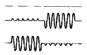
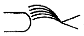

영사기능사 (2004-07-18 기출문제)
1과목: 전기일반
1. 60[Hz]의 각속도[rad/sec]는 약 얼마인가?
- 2π
- 180
- 314
- 377
(정답률: 알수없음)

2. 두 개의 저항 R1, R2가 병렬로 연결되었을 때 합성저항은?



- R1 + R2[Ω]
(정답률: 알수없음)
3. 저항의 단위 관계가 서로 바르게 된 것은?
- 1[kΩ] = 1000[Ω]
- 10[kΩ] = 1000[Ω]
- 1000[kΩ] = 1[Ω]
- 0.1[kΩ] = 10000[Ω]
(정답률: 알수없음)
4. 교류란 어떤 전기인가?
- 크기와 방향이 일정한 전기이다.
- 크기와 방향이 주기적으로 변하는 전기이다.
- 직류와 충격전류가 합친 전기이다.
- 맥류와 교류가 섞인 전기이다.
(정답률: 알수없음)
5. 무부하가 되면 대단히 속도가 높아져서 위험한 전동기는?
- 직류 분권 전동기
- 직류 타여자 전동기
- 직류 직권 전동기
- 동기 전동기
(정답률: 알수없음)
6. 10마력 하는 전동기가 200[V]에서 운전을 하고 있다. 정격 전류는 몇 [A]인가? (단, 1마력은 746[W]이다.)
- 74.6
- 37.3
- 14.92
- 7460
(정답률: 알수없음)
7. 굵기가 일정한 도체의 체적은 변하지 않고 지름을 1/2로 잡아 늘였을 때 저항은 처음의 몇 배가 되는가?
- 2배
- 4배
- 8배
- 16배
(정답률: 알수없음)
8. 물질에 따라, 자석에 자화되어 끌리는 물질을 무엇이라 하는가?
- 가역성체
- 반자성체
- 상자성체
- 비자성체
(정답률: 알수없음)
9. 그림 회로의 소비전력을 구하면?

- 100[W]
- 125[W]
- 173[W]
- 250[W]
(정답률: 알수없음)
10. 다음 중 옴의 법칙을 잘못 설명한 것은?
- 저항은 전압에 비례하고 전류에 반비례한다.
- 전류는 전압에 비례하고 저항에 반비례한다.
- 전압은 저항과 전류에 비례한다.
- 전류는 저항과 전압에 비례한다.
(정답률: 알수없음)
11. 다음 중 전압계의 측정범위를 넓히기 위해 전압계에 직렬로 접속하는 저항기는?
- 분류기
- 배율기
- 검류기
- 브리지
(정답률: 알수없음)
12. 6극 60[Hz] 교류발전기의 회전수는 몇 [rpm]인가?
- 900
- 1200
- 1800
- 3600
(정답률: 알수없음)
13. 빛이 입자성임을 설명할 수 있는 것은?
- 회절효과
- 굴절현상
- 다반사현상
- 광전효과
(정답률: 알수없음)
14. 단색광을 잘못 설명한 것은?
- 단색광은 굴절을 일으킨다.
- 단색광은 반사를 일으킨다.
- 단색광에서 분산현상을 볼 수 있다.
- 단색광에서 회절현상을 볼 수 있다.
(정답률: 알수없음)
15. 다음 중 파동이 한 매질에서 다른 매질로 진행할 때 변하지 않는 것은?
- 파장
- 진폭
- 진동수
- 진행속도
(정답률: 알수없음)
2과목: 렌즈 및 광원
16. 스크린에 선명한 화면이 투영되었을 때 렌즈의 초점거리란?
- 반사경에서 렌즈까지의 거리를 말한다.
- 광원에서 렌즈까지의 거리를 말한다.
- 영사창에서 스크린까지의 거리를 말한다.
- 영사창에서 렌즈 중심까지 거리를 말한다.
(정답률: 알수없음)
17. 초점거리가 30cm인 볼록거울에 후방 20cm되는 곳에 빛이 모이도록 빛을 입사하면 반사후 상은 어느 위치에 맺히는가?
- 거울앞 30cm
- 거울뒤 30cm
- 거울앞 60cm
- 거울뒤 60cm
(정답률: 알수없음)
18. 어느 영화관의 화면 폭이 15m이고, 영사거리가 30m일 때 다음 중 초점거리로 맞는 것은? (단, 영사창의 폭이 21mm일 때)
- 40mm
- 42mm
- 43mm
- 45mm
(정답률: 알수없음)
19. 다음 구조의 그림이 나타낸 등은?

- 네온 등
- 나트륨 등
- 고압수은 등
- 형광방전 등
(정답률: 알수없음)
20. 렌즈 필터(Filter)에 대한 설명이 바르게 된 것은?
- 현상처리 과정에서 필름으로부터 미노출의 은화합 물질을 제거하는 것
- 광선 중의 어떤 파장을 흡수하고 그밖의 것은 통과시키는 성능을 가지는 투명체
- 녹음과 재생에 있어서 사운드 레벨 조절장치
- 식별을 위해 한줄의 필름 가장자리에 프린트된 일련의 숫자
(정답률: 알수없음)
21. 다음 중 칼라 필름의 3색광을 감광하는데 필요한 층은?
- 보호층
- 방지층
- 유제층
- 중간층
(정답률: 알수없음)
22. 근시인 사람은 오목렌즈로 된 안경을 사용하여 망막에 상을 맺도록 한다. 그렇다면 근시안인 사람의 눈은 본래 어떤 상을 맺는가? (즉 렌즈를 착용하지 않았을 때)
- 망막 앞쪽에 허상
- 망막 뒤쪽에 허상
- 망막 앞쪽에 실상
- 망막 뒤쪽에 실상
(정답률: 알수없음)
23. NPN형 접합 트랜지스터를 사용한 증폭기에 있어서 이미터와 베이스(base)간의 전류는?
- 순방향 전류
- 역방향 전류
- 열전류
- 차단전류
(정답률: 알수없음)
24. 그림과 같은 정류회로를 바르게 설명한 것은?

- C가 없으면 RL에 직류가 흐르지 않는다.
- C가 클수록 직류 전압이 커진다.
- C가 클수록 맥류가 커진다.
- RL가 클수록 맥류가 커진다.
(정답률: 알수없음)
25. 그림은 βdc가 50 이고 콜렉터 전류가 10[mA]인 Si 트랜지스터를 나타낸 것이다. 트랜지스터가 정상적으로 동작된 다고 할 때 베이스에 흐르는 전류 IB를 구하면?

- 0.1[mA]
- 0.2[mA]
- 0.01[mA]
- 0.02[mA]
(정답률: 알수없음)
26. 스피커의 출력 음압레벨이 높으면 일정입력에 의해서 발생하는 음압은?
- 크다.
- 작다.
- 같다.
- 평탄하다.
(정답률: 알수없음)
27. 디지털 녹음 방식에서 발생하는 양자화 잡음을 방지하기 위하여 랜덤 잡음을 부가하는 것을 무엇이라 하는가?
- 디서링(dithering)
- 더빙(dubbing)
- 필터링(filtering)
- 세팅(setting)
(정답률: 알수없음)
28. P형 반도체와 N형 반도체의 접합은?
- 다이오드
- 트랜지스터
- SCR
- LSI
(정답률: 알수없음)
29. 영화음향의 효과음 중 "작은 나무가지가 튕겨 나는 소리"를 녹음하는 것을 무엇이라 하는가?
- 폴리(Foley)설비
- 믹스(Mix)설비
- 더빙(Dubbing)설비
- 서라운드(Surround)설비
(정답률: 알수없음)
30. 다음 바이어스 회로에 대한 설명으로 맞는 것은?
- 고정 바이어스 - 동작점이 온도변화에 매우 안정적이다.
- 전압 되먹임 바이어스 - 온도 상승으로 인한 컬렉터의 전류 감소를 보상하기 위한 회로이다.
- 전류 되먹임 바이어스 - 컬렉터 바이어스 이다.
- 이미터(Emitter)바이어스 - 온도 변화에 따른 안정을 위해 전류 되먹임을 한다.
(정답률: 알수없음)
3과목: 증폭기 및 녹음재생
31. 스피커의 특성에 대한 설명으로 맞는 것은?
- 3웨이 방식에서 중음 전용스피커를 스쿼커(Squawker)라고 한다.
- 일반적으로 트위터의 크기가 우퍼보다 크다.
- 정전형(콘덴서)스피커는 저음 전용이고 직류 바이어스 전원이 필요하다.
- 동전형(다이나믹)스피커 중 나팔형은 저역 특성이 좋다.
(정답률: 알수없음)
32. 정보를 기억하는 디지털 단위를 바르게 설명한 것은?
- 4bit = 1byte
- 4byte = 1word(16bit)
- 1kB(kilo bytes) = 1024byte
- 8byte = 1word(32bit)
(정답률: 알수없음)
33. 영사중 스크린 화면의 왼쪽이 흐린 경우 영사 반사경을 조정하고자 할 때 맞는 내용은? (단, 반사경 뒤에서 화면을 보았을 때)
- 반사경 오른쪽을 앞으로 민다.
- 반사경 왼쪽을 앞으로 민다.
- 반사경 위쪽을 앞으로 민다.
- 반사경 아래쪽을 앞으로 민다.
(정답률: 알수없음)
34. 멀리 있는 물체나 가까이 있는 물체를 거의 동시에 보아도 구분하여 잘볼 수 있는 것은 사람 눈의 어느 부분 역할 때문인가?
- 망막의 운동
- 각막의 곡률
- 수정체의 조절
- 모양체의 편광
(정답률: 알수없음)
35. A인간의 시각(視覺)에 대한 잔상시간은 보통 어느 정도인가?
- 약 10초 이다.
- 약 1/16초 이다.
- 약 24초 이다.
- 약 1/30초 이다.
(정답률: 알수없음)
36. 35mm 영사기의 간헐작동에 대한 설명이 틀린 것은?
- 굴대가 한번 돌 때마다 1/4씩만 돈다.
- 스프라케트에서 이루어지는 말티스크로스의 작동은 필름을 재빨리 옮긴다.
- 정지시간과 이동시간의 비율은 보통 3:1이 보통이다.
- 간헐식 스프라케트는 16개의 톱니로 8개의 후레임에 걸리게 된다.
(정답률: 알수없음)
37. 다음 영사기기 중 서로 관계가 없는 것은?
- 셧터와 후릿카
- 방화장치와 카바너
- 십자차와 로울러
- 영사창과 마스크
(정답률: 알수없음)
38. 자동방화 셔터의 설명이 바르게 된 것은?
- 광원이 영사실을 통하여 번지는 것을 막는다.
- 간헐운동을 하는 동안 불빛을 막는다.
- 영사기가 가동을 안할 때 애퍼츄어의 창을 막아주는 장치이다.
- 필름의 좌우가 정확한 위치에 유지하도록 보호한다.
(정답률: 알수없음)
39. 영사기 안전레바의 설치 목적은?
- 방화장치
- 방전장치
- 방수장치
- 방염장치
(정답률: 알수없음)
40. 영사기에서 집광렌즈(condenser lens)의 역할은?
- 램프의 빛을 한 곳으로 모아 준다.
- 램프의 빛을 확산시켜 준다.
- 램프의 빛을 반사경에 반사시켜 준다.
- 램프의 빛을 감소시켜 초점을 맞추어 준다.
(정답률: 알수없음)
41. 크세논 램프에 대한 설명으로 옳지 않은 것은?
- 크세논 램프는 석영구 관안에 고압 크세논가스를 봉입하였다.
- 크세논 램프는 온도 6000℃의 주황색에 가까운 순백색이다.
- 크세논 램프는 전극을 접촉 전류에 의한 방전 불꽃이 작열되어 탄산가스가 흘러서 강한 빛을 낸다.
- 갭 저항을 뚫는 첫 방전을 위하여 2만-4만V의 고주파 전압을 공급해 준다.
(정답률: 알수없음)
42. 크세논 램프(Xenon Lamp)의 특성중 옳지 않은 것은?
- 고휘도 점광원으로 수천 m의 예민한 직선 광선(beam)을 만들 수 있다.
- 그 빛의 에너지는 강력한 연속스펙트라로 이루어져 가시광의 분포는 자연형광에 가깝다.
- 관 내부는 고열로 인한 봉입물의 산화를 방지하기 위해 질소가스를 넣는다.
- 시동에 고전압이 필요하기 때문에 특수한 시동 장치가 필요하다.
(정답률: 알수없음)
43. 영사기 하부매거진의 필름이 정상으로 감기지 않을 때 어느 부위에 이상이 있는가? (단, 상부매거진은 정상임)
- 모터의 회전이 정속이 아니다.
- 매거진 중심축이 휘었거나 리일이 불량이다.
- 간헐운동장치가 정상이 아니다.
- 사운드 프로젝터에서 광원의 빛이 흔들린다.
(정답률: 알수없음)
44. 영사시 음향이 충분하고 음질이 좋은 재생음을 얻으려 한다. 다음 중 틀린 설명은?
- 광선의 굵기가 음대의 치수와 같아야 좋다.
- 광선이외의 빛이 음대에 닿지 말아야 한다.
- 광선이 필름위에 옳게 초점을 맺어야 한다.
- 광선이 가능한 한 어두워야 한다.
(정답률: 알수없음)
45. 시사실 등이 아닌 상영관의 영화 상영을 위해 영사(映寫)시 사용되는 필름에 해당되는 것은?
- 음화(네가티브) 필름
- 양화(포지티브) 필름
- 음화나 양화 두가지 모두
- 35mm 네가티브 필름
(정답률: 알수없음)
4과목: 영사기와 필름의 구조원리
46. 35mm 영사필름의 1권(卷)의 무게는 약 몇 kg 인가?
- 1.5kg
- 2.0kg
- 2.5kg
- 3.0kg
(정답률: 알수없음)
47. 그림들을 비교했을 때 1번 필름이 넌-애너모픽 35mm와이드 스크린 필름이라면 4번에서의 화면방식은?

- 70㎜ 시네마스코프
- 테크니라마(Technirama Anamorphic)
- 35㎜ 시네마스코프(에너모픽,anamorphic)
- 비스타-비젼(Vista-Vision)
(정답률: 알수없음)
48. 에니메이션 필름(Animated film)의 설명이 잘못된 것은?
- 개별적인 그림들이 프레임(frame)별로 촬영된 형식의 필름을 말한다.
- 필름위에 직접 그림을 그리는 영화 제작상의 한 분야이다.
- 이 프레임들을 1초당 24프레임으로 빠르게 영사하면움직임의 환상이 나타난다.
- 직접 TV 프로그램 방영에 가장 많이 사용된다.
(정답률: 알수없음)
49. 영화를 계속 상영하기 위하여 필름의 인계 큐마크는 일반적으로 화면 어느 부분이 좋은가?
- 우상
- 우하
- 좌상
- 중앙
(정답률: 알수없음)
50. 70mm 영화에서 필름의 이동방향과 한 필름의 퍼포레이션홀 수를 바르게 나타낸 것은?
- 횡방향, 4개
- 종방향, 5개
- 종방향, 4개
- 횡방향, 5개
(정답률: 알수없음)
51. 35㎜ 발성영화 영사필름의 음대(音帶)폭으로 맞는 것은?
- 약 1.8㎜
- 약 2.0㎜
- 약 2.2㎜
- 약 2.5㎜
(정답률: 알수없음)
52. 영사스크린이 가져야 할 조건으로 옳지 않은 것은?
- 연색성이 좋을 것
- 반사율이 높을 것
- 낮은 광도를 가질 것
- 적당한 지향성을 가질 것
(정답률: 알수없음)
53. 35mm 표준영사기가 1분간 흘려보낸 필름의 길이는?
- 약 45m 60cm
- 약 4m 56cm
- 약 2m 74cm
- 약 27m 40cm
(정답률: 알수없음)
54. 영사기 용어중 원판형, 원통형, 원추형 이라는 용어가 있다. 다음 설명중 옳은 것은?
- 렌즈 모형의 종류이다.
- 아파추어의 형식이다.
- 영사 샷터의 형식이다.
- 램프하우스의 형식이다.
(정답률: 알수없음)
55. 100[V]의 교류 전압을 배전압 회로로서 정류할 때 최대 정류전압[Vo]은 얼마인가? (단, 부하 전류는 흐르지 않는 것으로 본다.)
- Vo ≒ 420[V]
- Vo ≒ 360[V]
- Vo ≒ 280[V]
- Vo ≒ 140[V]
(정답률: 알수없음)
56. 그림의 Oscilloscope 파형은 무엇을 설명한 것인가?

- 방위각(Azimuth)
- 좌우 트랙(Left-Right Track)
- 버즈 트랙(Buzz Track)
- 거리(Focus)
(정답률: 알수없음)
57. 그림처럼 크세논 램프(Xenon Lamp)의 불꽃상태가 안정되지 않을 때의 조치 방법으로 올바른 것은 무엇인가?

- 점화기(Igniter)를 교체한다.
- 크세논 램프(Xenon Lamp)를 교체한다.
- 다이오드(Diode)를 교체한다.
- 동축 전자석의 전력공급을 올려 자력을 강하게 한다.
(정답률: 알수없음)
58. 다음 중 눈의 구조 및 기능에 대한 설명으로 틀린 것은?
- 수정체는 카메라의 렌즈와 같은 기능을 한다.
- 수정체의 두께는 모양체에 의해 변한다.
- 홍체는 카메라의 조리개와 같은 기능을 한다.
- 망막은 카메라의 셔터와 같은 기능을 한다.
(정답률: 알수없음)
59. 영사기 셔터(Shutter)의 주요 역할은?
- 필름 송출을 한다.
- 화면 밝기를 조절한다.
- 화면 깜박거림을 방지한다.
- 램프의 과열을 막아 준다.
(정답률: 알수없음)
60. 필름의 녹음방식에 대한 설명으로 맞는 것은?
- 광학녹음은 크게 농담형과 면적형으로 나눈다.
- 필름녹음방식은 크게 광학녹음방식과 디지털녹음방식으로 나눈다.
- 광학녹음은 녹음자 재료에 잔류자기로 음향을 기록한다.
- 마그네틱녹음방식은 광량의 변화와 관계있다.
(정답률: 알수없음)
주파수(frequency)와 각속도(angular velocity)는 다음과 같은 관계가 있습니다.
각속도(angular velocity) = 2π x 주파수(frequency)
따라서, 60Hz의 각속도는 2π x 60 = 377입니다. 따라서 정답은 "377"입니다.